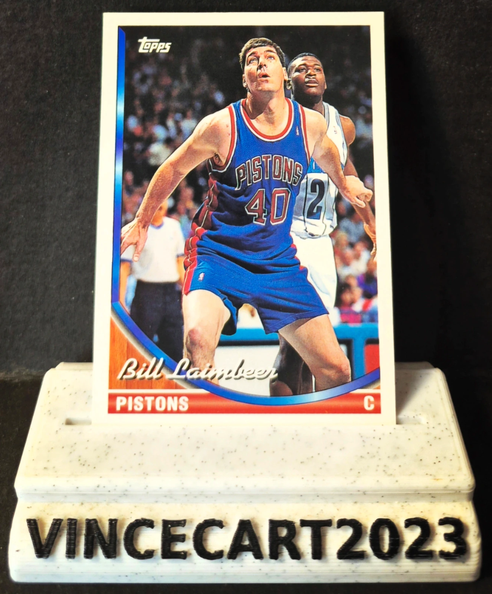

Carte NBA Bill Laimbeer Topps 1993 #147 Detroit Pistons Vintage
1,05 €
🏀 Carte NBA originale Bill Laimbeer de la collection Topps 1993, représentant le mythique pivot des Detroit Pistons. 📋 Détails : Joueur : Bill Laimbeer Équipe : Detroit Pistons Collection : Topps 1993 Numéro : #147 Éditeur : Topps Carte originale, non reprint ⭐ Bill Laimbeer est une figure emblématique des "Bad Boys" de Detroit, double champion NBA (1989 et 1990) et l'un des pivots les plus marquants de son époque. ✅ État général : très bon (voir les photos pour apprécier l'état exact de la carte). Idéale pour les collectionneurs de cartes NBA vintage, les fans des Detroit Pistons ou des légendes des années 80-90. 📦 Carte expédiée avec soin sous sleeve